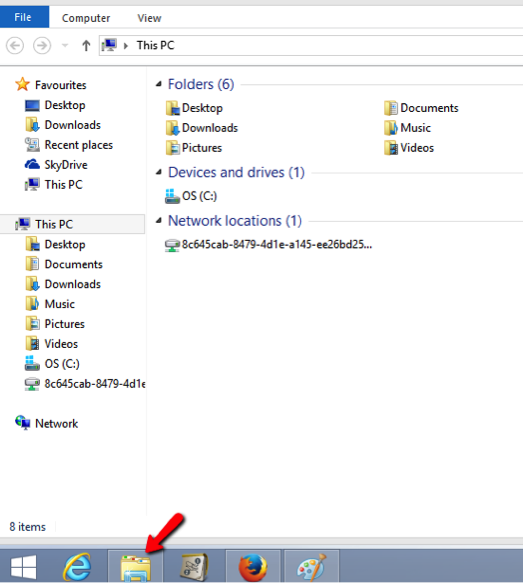
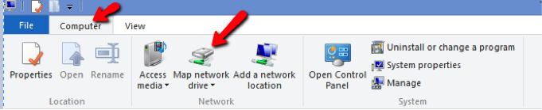

Setting up WebDAV for Windows 8/10
- First you need to navigate to the Desktop: after logging into Windows 8/10, click the Desktop icon.
- From the Desktop, click File Explorer and make sure 'This PC' is selected in the left-hand pane.

- At the top of the File Explorer window, click Computer > Map Network Drive > Map network drive.

- Select a vacant drive letter (e.g., Y) from the Drive drop down menu.

- In the Folder field, type (or copy and paste) the URL for this site (shown above). Click Finish.
- When prompted, enter your username and password and click OK.
- You can now drag files and folders to and from your computer and the site Resources folder.
Alternate method of setting up WebDAV on Windows
If the process above yields connections errors, you may be able to utilize the WebDAV functionality to access your files using a free third-party client called Cyberduck.
Setting up WebDAV for Windows Vista/Windows 7
Note: Use of WebDAV functionality on Windows Vista requires that you have Vista Service Pack 2 installed. If you do not yet have Service Pack 2 installed, please run Windows Update by clicking Start > All Programs > Windows Update.
- From the desktop or the Start menu, click Computer.
- At the top of the window, click Map Network Drive.
- Select a vacant drive letter (e.g., Z) from the Drive drop down menu.
- In the Folder field, type (or copy and paste) the URL for this site shown above. Click Finish.
- When prompted, enter your username and password and click OK.
- You can now drag files and folders to and from your computer and the site Resources folder.
When the setup process is complete, the course or project resources folder will appear under Computer as a drive, where it will act just like any other drive in Windows Explorer. You can now drag files and folders to and from your computer and the site's Resources folder.
Alternate method of setting up WebDAV on Windows
If the process above yields connections errors, you may be able to utilize the WebDAV functionality to access your files using a free third-party client called Cyberduck.
Setting up WebDAV for Mac (OS X)
Note: Depending upon the exact update of OS X, The Webdav support in the Macintosh Finder may well be too buggy to use. If you have problems with this approach, consider using Cyberduck.
- From the menu bar at the top of the screen in Finder, select Go > Connect to Server...
- In the Server Address dialog box, type (or copy and paste) the path as shown above in Step 1.
- Press the + button to save this path for future use.
- Click Connect.
- Type in your username and password and click Connect.
You will now see a window on your screen that represents the resources in your site. You can now drag and drop files into or out of this window and delete files by dragging them to the Trash.
Setting up WebDAV for Linux (Gnome)
- Go to Files > Connect to Server...
- In Server adress, type (or copy and paste) the URL: davs://xxxx/dav/xxxx
- Now click on Connect.
- Finally, you will be asked to supply your password.
You will now see a new drive under Files. This represents the resources in your site. It will act like any other folder on your computer. You can now drag and drop files into or out of this window and delete files by dragging them to the Trash.
Setting up WebDAV for Linux (Gnome) older versions
- Go to Places > Connect to Server...
- In Service type select WebDav .
- In Server, type (or copy and paste): hostname
- In Port, type (or copy and paste): 80
- In Folder, type (or copy and paste) the last part of the "Step 1" URL: dav/xxxx-xxxx-xxxx
- Check the option Add bookmark
- In Bookmark name, supply the name of the folder to create under "Network" and click Next.
- Now click on Connect.
- Finally, you will be asked to supply your password.
You will now see a new drive under Places. This represents the resources in your site. It will act like any other folder on your computer. You can now drag and drop files into or out of this window and delete files by dragging them to the Trash.
Setting up WebDAV for Linux (KDE)
- Open the file manager (Dolphin).
- On the left side, in Places, choose Network.
- Click on Add network folder.
- Check web folder (webdav) and click on Next.
- In Name supply the name of the folder to create under "Network" and click Next.
- In User supply your username.
- In Server, type (or copy and paste): hostname
- In Folder, type (or copy and paste) the last part of the "Step 1" URL: dav/xxxx-xxxx-xxxx
- If the URL uses HTTPS, check the option Encoded, and the port will change automatically to 80.
- Check the option Create an icon for this remote folder.
- Now click on Save and connect.
- Finally, you will be asked to supply your password.
You will now see a new drive under Network inside the file manager (Dolphin). This represents the resources in your site. It will act like any other folder from your computer. You can now drag and drop files into or out of this window and delete files by dragging them to the Trash.
Setting up WebDAV for Linux (console)
- Open a new terminal.
- Type in the command cadaver URL from Step 1
- You might be asked to accept a certificate
- Type in your username and password
- Now you can download and upload documents from the command line.
Type help for all avaliable commands.
Setting up WebDAV for Mac/Windows using Cyberduck
-
Download the Cyberduck WebDAV client.
- For Windows or OS X version 10.5 and later, download and install the most recent software at: http://cyberduck.io/
-
OS X versions before 10.5, download the Cyberduck WebDAV client at: http://update.cyberduck.io/Cyberduck-2.8.5.dmg
- Decompress the file and double-click on the .dmg file. (Depending on the configuration of your decompression software, the disk image may automatically mount.)
- A disk image with a name similar to Cyberduck-2.8.5 should now be available. Simply drag and drop the folder from the disk image to your Applications folder.
- Open the Cyberduck application in your Applications folder.
- Click the Open Connection button.
-
In Server, copy and paste the "Step 1" URL.
This will autofill all needed fields.
Also, you can manually introduce the requested information:
- Select WebDAV
- In Server, type: hostname
- In Port, type: 80
- Click on More options and type (or copy and paste) in Folder the last part of the "Step 1" URL: dav/xxxx-xxxx-xxxx
- Disable the Anonymous Login option.
- Type in your username and password
- Now click on Connect.
You will now see a window on your screen that represents the resources that are in your site. Simply drag and drop between this window and other folders on your computer to transfer files to and from your site's resources folder.
You can save these settings for future connections:
- Click on Bookmark in top menu bar.
- Click on New bookmark option.
- In the pop-up window, change the nickname. Remove "hostname – WebDAV (HTTPS)" and type the name for this connection.
- Close this window.